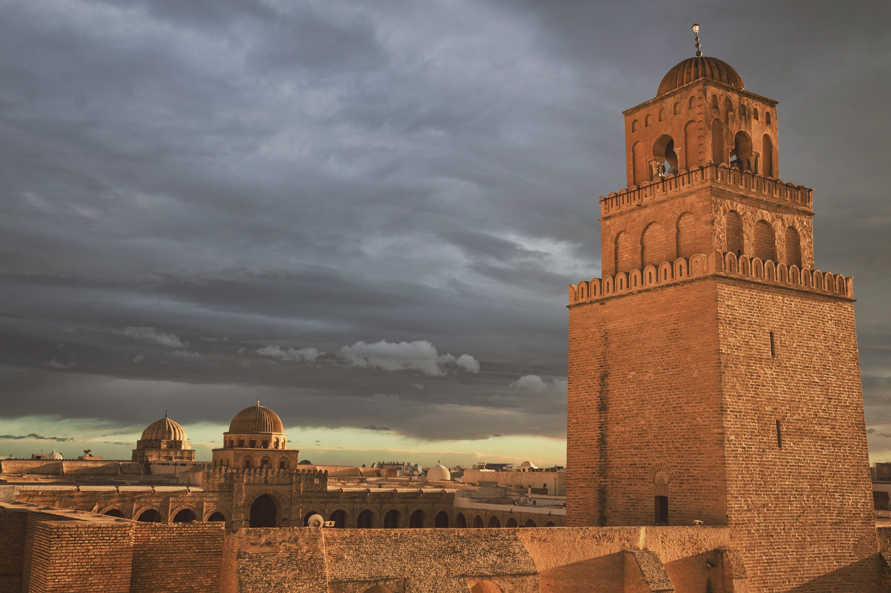

Le Blog de Voyage de Moez
✅accueil
🗺️astuce et conseil
📷carnet
📄contacter nous
A propos de moi
Bonjour tout le monde ,
Je m'appele Moez , je vous presente mon blog .
La tunisie le pays où je suis né et j'ai grandi ,dans une ville appelé korba du cap bon ,en fait il y a tant de chose à decouverte dans chaque region de la tunisie comme des paysages contrastés , un litoral de 1250 km parsemé d'iles et d'archipels, des tradition et des coutumes diverses et un riche héritage historique.
Je vais vous présenter les regions que j'ai visitées et vous donner quelques guides sur la façon de profiter de votre voyage en tunisie et des photos pour vous aider à comprendre les lieux que vous devez visiter et vous encourager à venir .
Si tu veut nous contacter et poser de question s'il vous plait clicker sur le lien "contacter nous" et donner vos information et on va vous envoyer un message à votre e-mail.
Les Places Que J'ai Visité en Tunisie
Tunis
Capitale de la Tunisie
Mosaïques romaines dans le musée du Bardo, ruines de Carthage et médina accueillant de nombreux monuments.
Djerba
Djerba est une île de la côte tunisienne connue pour ses plages méditerranéennes et ses villes blanches du désert influencées par les cultures berbère, arabe, juive et africaine.
Sousse
Sousse est une ville portuaire de l'Est de la Tunisie, et ouverte sur le golfe d'Hammamet. Elle est parfois surnommée la " perle du Sahel "
Hammamet
Hammamet est une ville tunisienne située au nord-est , elle est souvent présentée comme une station balnéaire .la ville offre aux touristes de longues plages le long du golfe portant son nom
Sidi Bou-Saïd
Musée,port de plaisance et pittoresque. Les maisons traditionnelles de couleur bleu-blanc.En arpentant le sommet de la colline, vous profiterez
Tozeur
Tozeur est connut par le film "Star Wars" , la désert ,les chameau et dromadaire
El Jem
Elle est célèbre pour son amphithéâtre, le plus grand de l'Empire romain aprés le colisée de Rome et celui de Capouse
Monastir
Mausolée, port de plaisance et plage
Kairouan

Historique ville sainte musulmane, grande Mosquée et médina fortifiée avec sites ornés de mosaïques décorées.
Matmata
Star Wars ,désert,grotte et amphithéâtre
Ain Draham
Forêt, randonnée pédestre et sanglier
Mahdia
Plage,désert et parc aquatique
Chott el-Jérid
Lac ,désert ,star wars et chameau
Tabarka
Jazz ,récif corallien , golf et plage
Tataouine
Star wars (eu le nom "TATWIN" en star wars),désert,dromadaire et chameau
Bizert
Plage,port de plaisance et histoire
Houmt Souk
Marché, caravansérail et plage
Nabeul
Poterie, marché, artisanat, plage et musée
Zaghouan
Temple,site archéologique et montagne
korbous
Source chaude et plage
Lac echkeul
Lac, réserve naturelle, parc et flamants
.jpg)